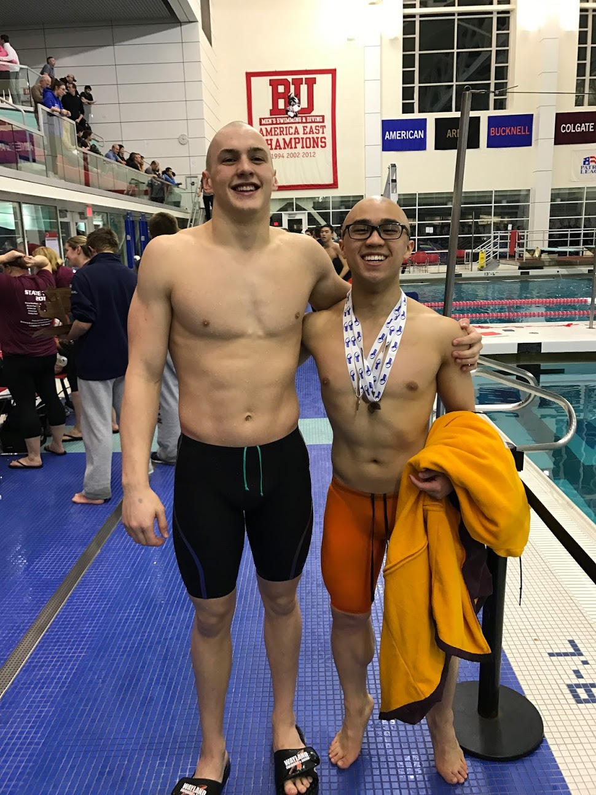
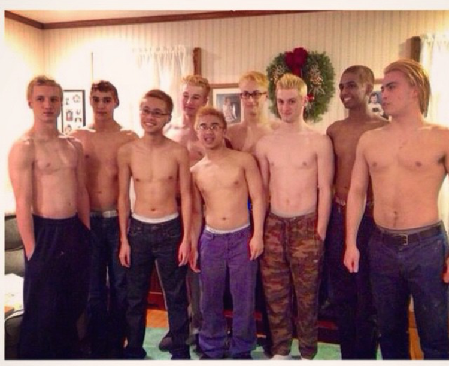

UMaine Swimming
The link above is an article my high school paper wrote about my swimming career.
Swimming is a big part of who I am as a person. I love the atmosphere, the friends I've made, and even the temperature of the pool (most of the time). I've been swimming as long as I've been walking. Every year I strive to be the best swimmer I can be. Through the years, I appreciate the friends that I have made and those friendships that will last forever. It's hard to imagine what my life would have been like if I never swam. Below are some pictures that I have swam with since the very beginning!
"If you want to be the best, you have to do things that other people aren't willing to do."- Michael Phelps
 